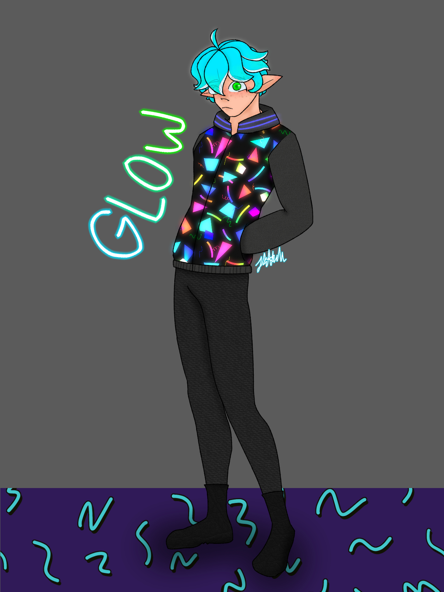

Glow

Basics
Name
Tatsuka Oshiyama
Username
Glow
Guild
Mod Guild
Gender / Pronouns
Demi-Boy, He / They
Age
26
Orientation / Sexuality
Demisexual
Availability
Single!
Personality
Glow is a very happy individual. He sometimes switches between first and third person, and he is usually optimistic. He enjoys giving affection, and wants to live a fulfilling life full of happiness and love. He finds happiness in his job as a moderator.
Character Stats
Race / Class
Lumiobipedal Megaleledonidae ( AKA Bipedal-Humanoid Glow Squids)
Level
72
Extra Extremities
His hair is similar to an inkling from Splatoon, where his hair is like,,,squid appendages.
Abilities (As in powers): Glow,,,he glows. He glows when he's happy, or feeling an extreme amount of emotion. His blood is highly toxic.
Abilities
- Creation, As a moderator, he is able to design and create NPCs, or new animal species. If he creates it, they cannot be deleted by him, and are often thrown out to be caught by bounty hunters.
Weaknesses
He gets frustrated easily.
Special Skills
He throws a bangin' party.